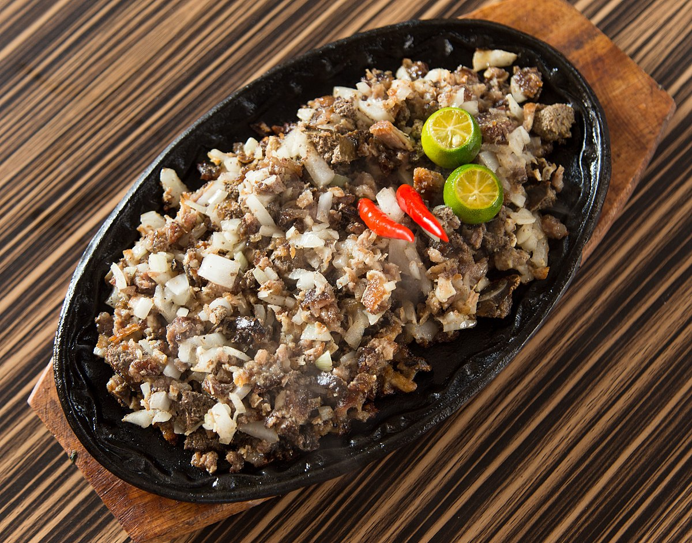

Ingredients:
- Pigs face and Ears
- Onion
- Calamansi
- salt and pepper
How to cook:
- Boil Pigs face and Ears with salt and aromatics.
- Grill Pigs face and Ears till maillard is achieved.
- Chop the Grilled Pig and Ears and Onions to tiny pieces
- Season the salad with calamansi, salt, and pepper to taste.